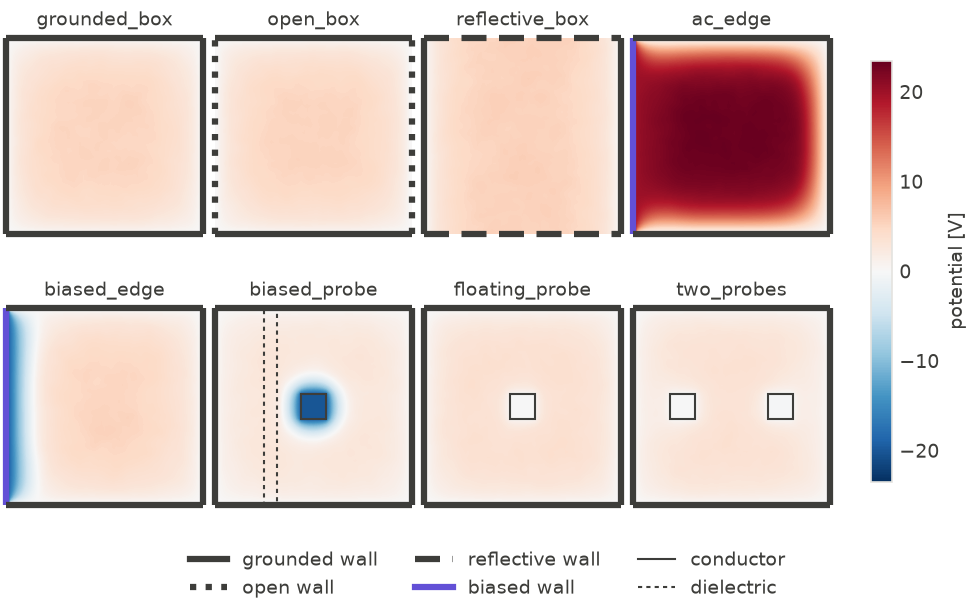

Wall types#
A square box holds a uniform argon plasma, and eight variants of the case put different walls around it and different objects into it. A wall sets a condition for the potential and decides what happens to a particle that reaches it; a conductor inside the box is held at a voltage or floats. The example shows each type at work on the same plasma, and it checks the potentials that the types prescribe. The case has no collisions and no source, so the plasma only loses particles.
Setup#
Domain |
15.0 mm × 15.0 mm |
Grid |
64 × 64 cells of 0.235 mm, half a Debye length of the start |
Plasma |
electrons at 4 eV and Ar⁺ at 0.05 eV, uniform at \(10^{15}\ \mathrm{m^{-3}}\) at the start; the ions are moved every 10th step |
Particles |
32 per cell in each species |
Collisions, sources |
none |
Time step |
\(5\times10^{-11}\) s (\(\omega_{pe}\,\Delta t = 0.089\)) |
Run |
20 000 steps (1 µs), output every 200 steps |
Field solver |
the direct strip solver for the five variants with nothing inside the box, GMGa3, the 2-D multigrid, for the three with a conductor; |
Cost |
about 10 s a variant with the strip solver and 1.5 to 3 minutes with the multigrid, on one NVIDIA A100 |
The variants, chosen with --walls:
Variant |
Walls |
Inside the box |
|---|---|---|
|
four grounded walls |
|
|
open at both \(x\) ends, grounded at both \(y\) ends |
|
|
grounded at both \(x\) ends, reflective at both \(y\) ends |
|
|
the wall at \(x = 0\) biased at \(V\sin(2\pi f t)\) with \(V = 20\) V and \(f = 5.25\) MHz, the others grounded |
|
|
the wall at \(x = 0\) held at \(-20\) V, the others grounded |
|
|
four grounded walls |
a square conductor of 8 × 8 cells in the middle, held at \(-20\) V; a dielectric slab of 4 cells with \(\varepsilon_r = 4\) across the box, between the wall at \(x = 0\) and the conductor |
|
four grounded walls |
the same conductor, floating |
|
four grounded walls |
two floating conductors of 8 × 8 cells at a quarter and at three quarters of the box along \(x\), each with its own potential |
A grounded and an open wall both hold \(\phi = 0\) and both remove the particles that reach them. A reflective wall returns the particles and sets \(\partial\phi/\partial n = 0\). Particles pass through the dielectric slab; it only changes the permittivity.
Running#
for w in grounded_box open_box reflective_box ac_edge biased_edge biased_probe floating_probe two_probes; do
python examples/walls/wall_types/case.py runs/wall_types/$w --walls $w --run
done
python examples/walls/wall_types/analyze.py runs/wall_types
case.py writes runs/wall_types/<variant>/case.toml and, with --run,
runs build/HEXAPIC on it (--hexapic names another binary). case.toml
beside the script is the variant grounded_box, for a run without Python.
analyze.py takes the directory that holds the variants’ runs, prints the
numbers below and writes results.json and the figure there. --seed N
sets the seed of a run, and --live makes case.py write the frames that
HEXAPIC / VIZ shows during the run.
Results#

The potential at the last step of each variant. The AC edge is at its crest of \(+20\) V there.
Variant |
Ions left |
Electrons left |
Plasma potential [V] |
Probes [V] |
|---|---|---|---|---|
|
60.2 % |
54.7 % |
5.7 |
|
|
60.2 % |
54.6 % |
5.7 |
|
|
77.7 % |
74.2 % |
5.9 |
|
|
48.9 % |
36.9 % |
14.3 |
|
|
53.7 % |
46.0 % |
5.5 |
|
|
44.6 % |
35.5 % |
3.2 |
\(-20\) (held) |
|
51.8 % |
45.5 % |
4.1 |
\(-0.18 \pm 0.10\) |
|
46.0 % |
39.4 % |
3.9 |
\(-0.12 \pm 0.09\) and \(-0.25 \pm 0.10\) |
The plasma potential is the largest potential inside the box, and it and the potentials of the floating probes are means over the last ten outputs (0.1 µs, half a period of the AC edge); the scatter is the standard deviation of those ten. The numbers are those of one run of each variant.
What the walls do to the plasma:
In every box the electrons leave first, and the plasma settles a few volts above the walls, which holds the rest back. A box of 32 Debye lengths loses about 40 % of its ions in 1 µs through the sheaths at its four walls.
The open and the grounded box behave alike, as their walls prescribe the same potential and remove the same particles.
With reflective walls at both \(y\) ends the plasma is lost only through the two \(x\) walls, and about half as many particles leave.
A wall or a conductor at \(-20\) V draws a wider sheath and more ions. The slab changes the field between the wall and the probe, and the particles cross it.
The AC edge drives the potential of the whole plasma up and down: at the crest the plasma is 3.5 V above the edge. This box loses the most electrons.
A floating probe settles within 0.3 V of the grounded walls. The walls and the probe face the same plasma, and in a steady state both collect as many electrons as ions. The two probes of
two_probesare mirror images and float at the same potential within the scatter.
Checks of the prescribed potentials#
Where a type prescribes a potential exactly, analyze.py compares it with
the output at every node of the wall or conductor and at every output
step.
Check |
Largest difference [V] |
|---|---|
Grounded and open walls at 0 V, all variants |
0 |
|
0 |
|
\(1.6\times10^{-5}\) |
|
0 |
|
0 |
The difference at the AC edge is the rounding of the single-precision output. The corner nodes belong to two walls and are left out; a corner between a biased and a grounded wall has the biased wall’s potential.
A box with four reflective walls is not among the variants. Changed to
that by hand (the two grounded walls of reflective_box set to
reflective), the case ran and kept all 131 072 particles of each species
over 2000 steps.
Files#
|
the case as a PICMI script; |
|
the variant |
|
the table and the checks, from the runs of the variants |
|
the figure above, as |
|
what the checks are taken from |
The script#
case.py
#!/usr/bin/env python3
"""wall_types: the same plasma in a box with eight sets of walls and probes.
python case.py DIR --walls NAME # DIR/case.toml of the variant NAME (default grounded_box)
python case.py DIR --walls NAME --run # and HEXAPIC on it (build/HEXAPIC; --hexapic: another), into DIR/output
python case.py # the case.toml beside this script (grounded_box)
A square box full of a uniform, neutral argon plasma. The variants differ
in what is around and inside it:
grounded_box four grounded walls
open_box open walls at both x ends, grounded walls at both y ends
reflective_box grounded walls at both x ends, reflective walls at both y ends
ac_edge the x-lo wall biased with a sine voltage, the others grounded
biased_edge the x-lo wall held at a DC voltage, the others grounded
biased_probe four grounded walls, a conductor held at a DC voltage in the middle and a dielectric slab beside it
floating_probe four grounded walls, a floating conductor in the middle
two_probes four grounded walls, two floating conductors that float separately
The case has no collisions and no source. --seed N is the run's seed,
--live writes the frames HEXAPIC / VIZ shows during the run.
"""
import argparse
import math
from pathlib import Path
from hexapic import picmi
VARIANTS = ("grounded_box", "open_box", "reflective_box", "ac_edge", "biased_edge", "biased_probe", "floating_probe",
"two_probes")
ap = argparse.ArgumentParser(description="a plasma in a box with different walls: case.toml")
ap.add_argument("dir", nargs="?", type=Path)
ap.add_argument("--walls", choices=VARIANTS, default=VARIANTS[0], help="the variant (default grounded_box)")
ap.add_argument("--seed", type=int)
ap.add_argument("--live", action="store_true")
ap.add_argument("--run", action="store_true")
ap.add_argument("--hexapic", type=Path, help="the binary --run runs (default build/HEXAPIC)")
args = ap.parse_args()
HERE = Path(__file__).resolve().parent
N0 = 1e15 # the density at the start [m^-3]
TE, TI = 4.0, 0.05 # the temperatures at the start [eV]
N = 64 # the cells along x and along y
CELLS_PER_DEBYE = 2 # the Debye length of the start in cells
PER_CELL = 32 # macro-particles per cell and species
DT = 5e-11 # the time step [s]: w_pe dt = 0.089
T_END = 1e-6 # the run's length [s]
OUTPUTS = 100 # outputs over the run
V_BIAS = -20.0 # the voltage of the biased edge and of the biased probe [V]
V_AC = 20.0 # the amplitude of the AC edge [V]
AC_PERIODS = 5.25 # its periods in the run: the run ends at a crest
PROBE = 8 # a probe's side in cells
SLAB = 4 # the dielectric slab's thickness in cells
SLAB_EPS = 4.0 # its relative permittivity
c = picmi.constants
dx = math.sqrt(c.ep0 * TE / (N0 * c.q_e)) / CELLS_PER_DEBYE
steps = round(T_END / DT)
walls = {side: "grounded" for side in ("x_lo", "x_hi", "y_lo", "y_hi")}
if args.walls == "open_box":
walls["x_lo"] = walls["x_hi"] = "open"
if args.walls == "reflective_box":
walls["y_lo"] = walls["y_hi"] = "reflective"
grid = picmi.Cartesian2DGrid(number_of_cells=[N, N], lower_bound=[0.0, 0.0], upper_bound=[N * dx, N * dx],
lower_boundary_conditions=[None, None], upper_boundary_conditions=[None, None])
sim = picmi.Simulation(solver=picmi.ElectrostaticSolver(grid=grid), time_step_size=DT, max_steps=steps,
hexapic_run=None if args.seed is None else {"seed": args.seed},
hexapic_output={"phase_space": False} | ({"live": True} if args.live else {}),
hexapic_title=f"wall_types: {args.walls}",
hexapic_description="An argon plasma in a square box: one of eight sets of walls and probes.")
if args.walls == "ac_edge":
sim.add_boundary(picmi.Boundary(type="biased", location="x_lo", voltage=0.0, amplitude=V_AC, frequency=AC_PERIODS / T_END))
elif args.walls == "biased_edge":
sim.add_boundary(picmi.Boundary(type="biased", location="x_lo", voltage=V_BIAS))
else:
sim.add_boundary(picmi.Boundary(type=walls["x_lo"], location="x_lo"))
for side in ("x_hi", "y_lo", "y_hi"):
sim.add_boundary(picmi.Boundary(type=walls[side], location=side))
def square(centre_x):
"""A probe's nodes: a square of PROBE cells about the node centre_x, at half the box's height."""
lo_x, lo_y = centre_x - PROBE // 2, N // 2 - PROBE // 2
return {"from": [lo_x, lo_y], "to": [lo_x + PROBE, lo_y + PROBE]}
if args.walls == "biased_probe":
sim.add_region(picmi.Region(type="dielectric", name="slab", permittivity=SLAB_EPS,
nodes={"from": [N // 4, 0], "to": [N // 4 + SLAB, N]}))
sim.add_region(picmi.Region(type="conductor", name="probe", nodes=square(N // 2), voltage=V_BIAS))
if args.walls == "floating_probe":
sim.add_region(picmi.Region(type="conductor", name="probe", nodes=square(N // 2)))
if args.walls == "two_probes":
sim.add_region(picmi.Region(type="conductor", name="probe_a", nodes=square(N // 4), group=0))
sim.add_region(picmi.Region(type="conductor", name="probe_b", nodes=square(3 * N // 4), group=1))
layout = picmi.PseudoRandomLayout(n_macroparticles_per_cell=PER_CELL)
# the ions first: the order of the [[load]] tables, and of the populations in the output
sim.add_species(picmi.Species(name="ions", particle_type="Ar", charge_state=1, hexapic_subcycle=10,
initial_distribution=picmi.UniformDistribution(density=N0, hexapic_temperature_eV=TI)), layout)
sim.add_species(picmi.Species(name="electrons", particle_type="electron",
initial_distribution=picmi.UniformDistribution(density=N0, hexapic_temperature_eV=TE)), layout)
sim.add_diagnostic(picmi.FieldDiagnostic(grid=grid, period=steps // OUTPUTS))
if args.run and args.dir is None:
ap.error("--run needs a directory for the run")
print(sim.write_input_file((args.dir or HERE) / "case.toml"))
if args.run:
sim.run(**({} if args.hexapic is None else {"hexapic": args.hexapic.resolve()}))
References#
The case is compared with no theory and has no data from other codes. The
checks of the README are the conditions that the wall types and the
conductors prescribe (the case.toml reference, [[boundary]] and
[[region]]): the potential of a grounded, open or
biased wall, and one potential over a conductor.